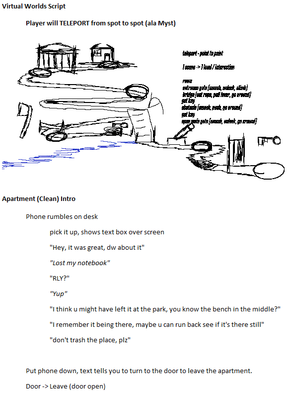

This final project for the Designing Virtual Worlds course involved expanding on what I had learned from my midterm project into a more complete experience. I elected to use the opportunity to expand on the atmosphere I envisioned with Lonely Road, only this time instead of relying on the occasional animation and sound effect to convey mood, I created a more immersive environment with a focus on exploration, environmental design, and impactful choices.
It was my first real foray into narrative game design within a 3D space, and in VR no less. The experience is centered around a lost notebook that the (somewhat blaise) protagonist must find in a park they had just visited with their friend. I imagined it as a short, contemplative experience about common-sense, as well as our tendency (especially as gamers) to go on autopilot and do anything to "win" without stopping to think about the consequences of our actions.
I imagined initially the experience as a short walk in a park, with the player going up to a cabin in the woods and making certain choices that would affect how the cabin itself would appear. However, as I developed the experience further, and I became more familiar with my limits as well as those of the engine, I decided to focus more on environmental storytelling and atmosphere rather than branching narratives. The final experience is more linear than my original concept, but it did enable me to more focus on how to implement the various interactions I had planned.
The player would have the opportunity to break three main things in the environment: a gate at the entrance of the park, a bridge, and another gate leading up to where they (might) find their notebook. Each broken object would be tracked an run up a score (represented within a script called "FlagsStore") and at the end of the experience, the player would be shown a different ending based on how many things they had broken. The endings were meant to reflect the idea that while breaking things may seem inconsequential in the moment, there are always consequences to our actions, and sometimes those consequences can be significant.
The interactions themselves were implemented using simple raycasting from the player's hand controllers, allowing them to point and click on objects to interact with them. I also added audio cues and visual feedback to make the interactions feel more satisfying, as well as incorporating more complex animations to enhance the overall experience. Tracking the broken objects and determining the ending was handled through a combination of scripts that held and read certain variables like "gateBroken" and "bridgeBroken" to keep track of the player's actions throughout the experience.
Movement, unlike in my midterm project, was implemented using teleportation to reduce motion sickness in VR and to better control the player's perspective. I thought of how games like Myst handled limited movement to put they player in specific vantage points to take in the environment and showcase puzzle areas, and I wanted to replicate that (the best I could) in VR.
I set up specific teleportation nodes throughout the environment that the player could use to move around, ensuring that they would always have a clear view of their surroundings and be able to take in the atmosphere I had worked hard to create. This also allowed me to control the pacing of the experience, guiding the player through the environment in a way that felt natural and immersive. These teleport nodes could teleport you directly to other nodes, or to a proxy node in moments where direct teleportation wasn't possible due to environmental constraints or would be too disorienting or difficult as a player. They would also only ever show up when the player was on a neighboring node and if/when they had met certain conditions to access them, pulled from the aforementioned "FlagsStore" script.
All in all, considering the time constraints, my still somewhat limited knowledge of Unity and C#, the challenges of working in VR, and a fair number of unexpected technical issues, I am fairly satisfied with how the final project turned out. It has deepened my understanding of VR development, environmental storytelling, and player interaction design, all of which I plan to carry forward into future projects.
3D Models and Textures Used in This Project:
You can look through the scripts I used, and try a (still somewhat buggy) APK here!